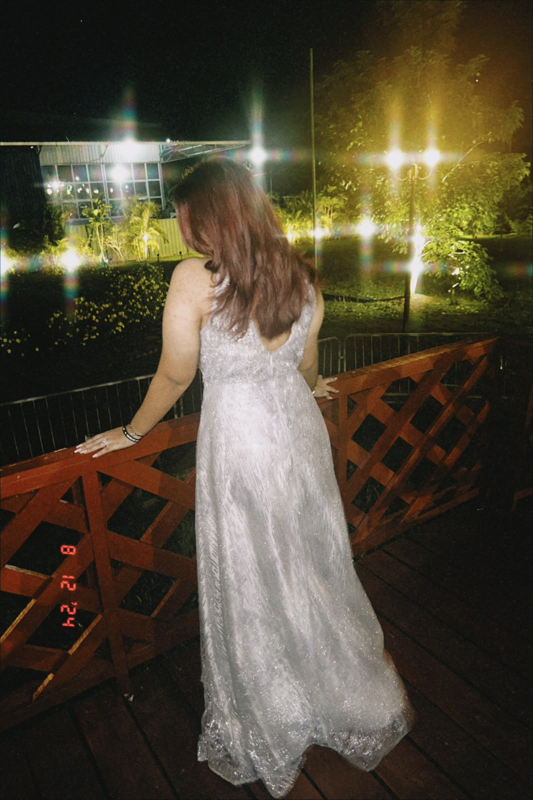

About Me
About Me

I am currently a Software Engineering student and have been studying in this field for the past two years. When I first started, I had very little knowledge of programming and software development. My experience with technology was mostly limited to basic computer applications such as presentations and spreadsheets.
As I progressed through my studies, I discovered how interesting software development can be. Learning new concepts and seeing ideas come to life through code has motivated me to continue growing in this field.
Throughout my studies, I have worked on several projects that helped me develop my skills. One project I am particularly proud of is a bakery website that I designed and built.
My educational journey has strengthened my interest in web development and inspired me to continue exploring new technologies and design principles.